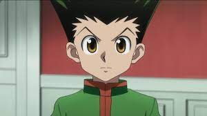

My Favorite Anime Series
About the HunterxHunter

Hunter × Hunter is a Japanese manga series written and illustrated by Yoshihiro Togashi. It has been serialized in Shueisha's shōnen manga magazine Weekly Shōnen Jump since March 1998, although the manga has frequently gone on extended hiatuses since 2006.
- Gon Freecs 
- Killua Zoldyck
- Kurapika
- Leorio